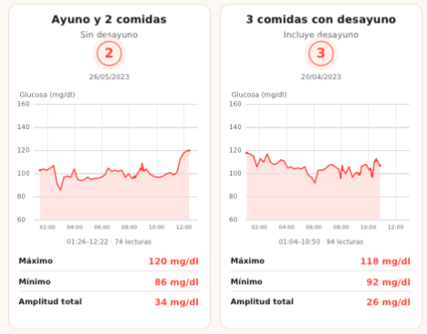

Mitos con datos
¿Saltarte el desayuno baja tu glucosa?
Dos días de la misma persona. Spoiler: depende (y mucho).
Desliza →
Hacemos visible lo invisible
Dos días de la misma persona. Spoiler: depende (y mucho).
Desliza →

Misma persona, misma franja horaria (madrugada a mediodía). La respuesta puede variar entre personas.
| Sin desayuno | Con desayuno | |
|---|---|---|
| Máximo | 120 mg/dl | 118 mg/dl |
| Mínimo | 86 mg/dl | 92 mg/dl |
| Amplitud | 34 mg/dl | 26 mg/dl |
Menos amplitud = curva más estable.
glucovibes.com